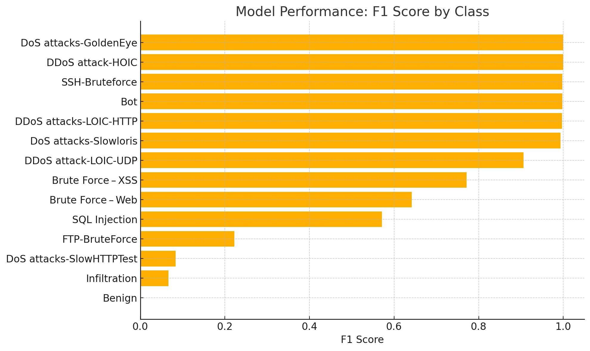
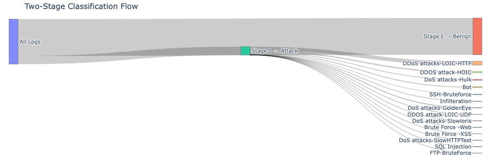

// Security Analytics Project
Attack Triage Classifier
A modular machine learning system for identifying attacks across log types.
Project Overview
This project ingests high-volume NetFlow/PCAP-derived datasets — comprising benign traffic and multiple attack types — and delivers a two-stage classification system. Source data from the Canadian Institute for Cybersecurity (CIC) and the University of New Brunswick (UNB).
Attack vs. Benign
A binary XGBoost model flags each flow as "benign" or "attack," achieving ~98% accuracy and 0.99 AUC on hold-out data with training times under 20 seconds.
Attack Type Identification
For flows flagged as "attack," a multiclass XGBoost model determines the specific family (e.g. DDoS-HTTP, SSH-BruteForce, SQL Injection). Dominant classes reach F₁-scores > 0.99; weaker classes are highlighted for targeted feature improvements.

Highlights
- Early Detection: Flags anomalies at line-rate so SOC teams can intervene before attacks escalate.
- Automated Triage: Auto-classifies attack types, enabling analysts to prioritize DDoS, brute-force, SQL exploits, or lateral-movement probes.
- Resource Efficiency: Two-stage logic minimizes multiclass inference to only suspicious flows, cutting compute costs and false alarms.
- Performance & Scalability: Models train in seconds on millions of flows; easily evolves into streaming architectures without re-engineering.
- Actionable Insights: Detailed per-class metrics uncover blind spots, guiding feature engineering and signature development.
- Clear Reporting: Bar charts and Sankey diagrams communicate model performance and traffic splits for dashboards, threat briefings, and compliance.
Visualizations
Key model outputs from the analysis:


Notebook
Applies a two-stage classification pipeline to identify attack types from NetFlow logs.
View Notebook →Key Takeaways
- Different log types require tailored detection techniques — no one-size-fits-all.
- Effective pipelines hinge on robust preprocessing and domain-aligned feature engineering.
- Clear visualizations are critical for operational interpretation of model results.